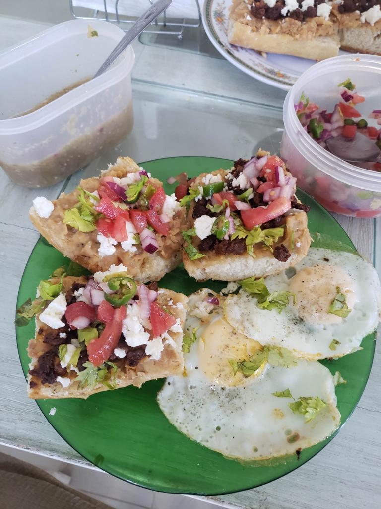

Molletes

A mollete is a traditional meal from Mexico and it consists of a bolillo cut by half
and with different ingredients on top of it.
For this recipe, we will use beans, chorizo and some cheese.
You can combine this with your favorite sauce, eggs and a mix of tomatoes, onions and coriander
as it is shown in the picture.
Ingredients (3 people):
- 2 Bolillos
- 1/4 kg of boiled beans
- Salt and pepper
- 200 g of mexican chorizo
- 1 spoon of butter
- 1 onion
- 1 handful of oregano
- 150 g of cheese
Steps:
- To start, cut the onion in very little cubes with a knife. You can also blender the onion, but cut it in various pieces first.
- Add a spoon of butter to a pan and wait for it to melt. Once it is liquid, add the onion and the oregano. Then, start mixing until the onion becomes semi-transparent. This will smell very good.
- Now it's time to add the beans. Start mixing the ingredients and when they get hot enough, grind them with a masher until the texture gets ready to be spreadable on the mollete.
- Cut the bolillos by the half so you result with 4 parts. Hot them up in the fire. Spread the beans on the top of each with a spoon.
- Add the desired quantity of chorizo and cheese too.
- You can finish the dish by placing eggs, sauces, bacon or whatever you like to make the meal even better!
Go back to main page